An LLM in Space, in 24 Hours
Agents in Space: we designed, built, launched, and recovered a high-altitude balloon payload carrying an NVIDIA Jetson, all within a 24-hour hackathon, to run an AI agent at the true edge. Hackers and MIT students submitted 400+ prompts for the agent to run at altitude, with a radio link back to the ground through Yagi antennas we built from scrap.
The Problem
At altitude, bandwidth is scarce: you can't stream high-resolution video down to run analysis on the ground, and you can't wait until landing for the data. Running inference on board and sending back only the results is the point of edge compute. We wanted to test that by putting an AI agent on a balloon.
The constraint was time: get a working compute payload to the edge of space and back in a single day, from design through launch and recovery. Cambridge sits close to the Atlantic, so a long drift downrange could mean losing the payload in the ocean.
Design
I was the team's aerospace engineer, in charge of everything that got the payload into the air and back: the balloon and lift, the flight train, the payload structure, inflation, launch, and recovery. In the team's words, I was the "resident balloon expert" who architected the launch. Teammates handled the radio, electrical, and software.
The original plan was two balloons with a radio link between them for cooperative tasks. As the hardware fell behind schedule we cut it to one, which was the right call in 24 hours.
The flight was built around a 1000 g balloon carrying about 3.6 lb of components before structure. The payload paired a Jetson Orin Nano running the LLM with an ESP32 handling flight sensors (GPS, altimeter, IMU), a Raspberry Pi for video and as a failsafe, separate radio links for commands and data, a video transmitter, and AirTags as backup tracking.
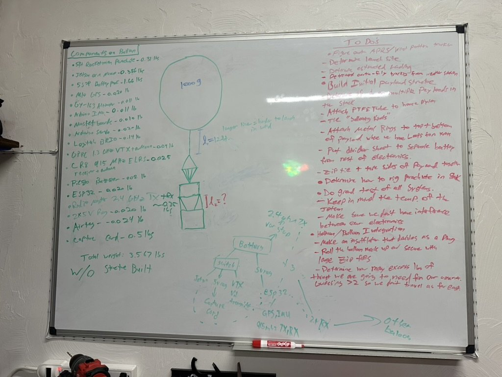
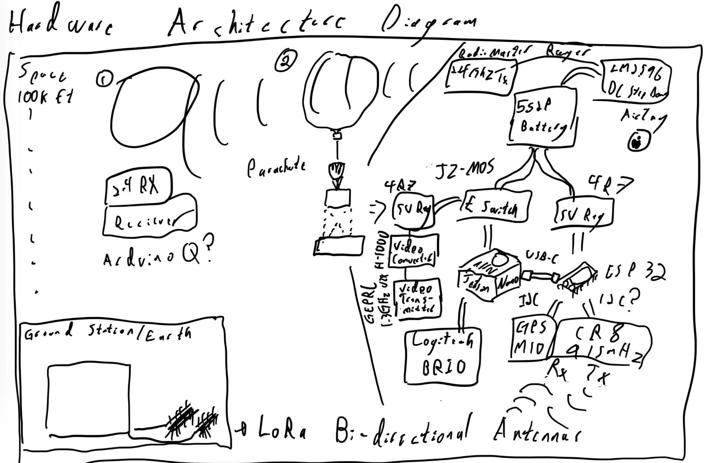
I put together the flight-hardware list: the 1000 g balloon; helium with a CGA-580 regulator, hose, and inflation nozzle; the parachute; nylon/Dyneema line and swivels; pink XPS foam board for the payload boxes; a GPS tracker and recovery beacon; the battery and power cabling for the Jetson; and a scale to weigh the payload and set the free lift.
I also ran the lift calculations. NOAA wind forecasts showed a real risk of drifting over the Atlantic, and in a 24-hour hackathon we didn't have time to drive far enough from the coast to give ourselves a comfortable margin. So instead of the standard 2 lb of free lift, I sized for roughly double: a faster ascent spends less time in the wind and lands closer to home.
What We Built
Flight hardware. I designed and built the flight side: both insulated XPS foam payload boxes, all of the rigging (including a ring I laser-cut to spread the lines), the system for sealing the balloon, and tying the whole flight train together from balloon to parachute to payload.
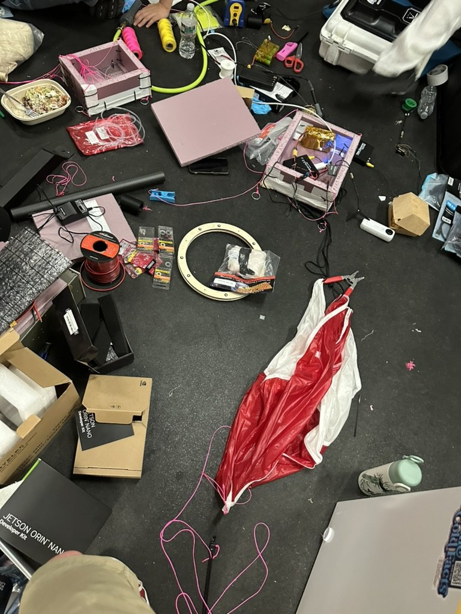
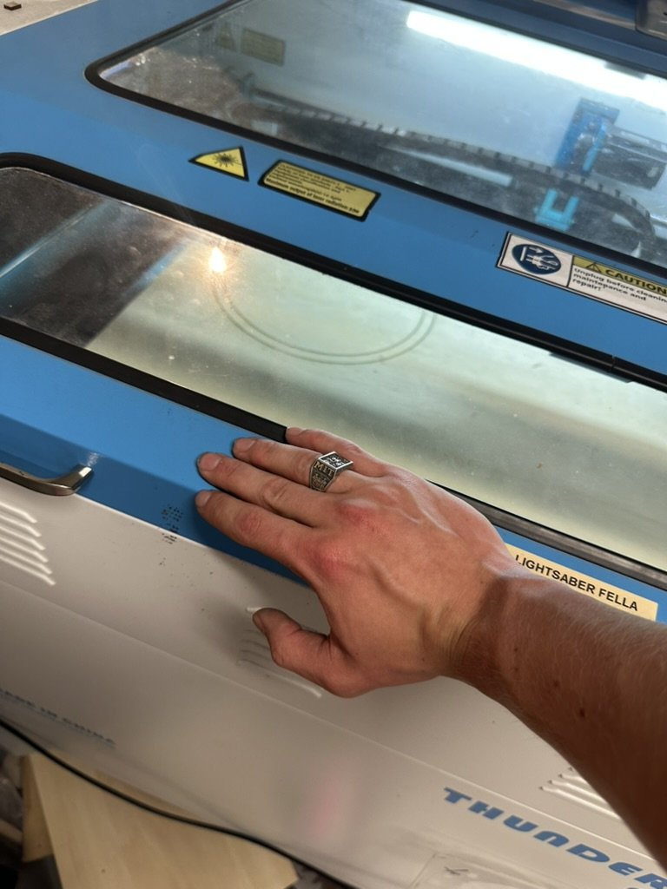
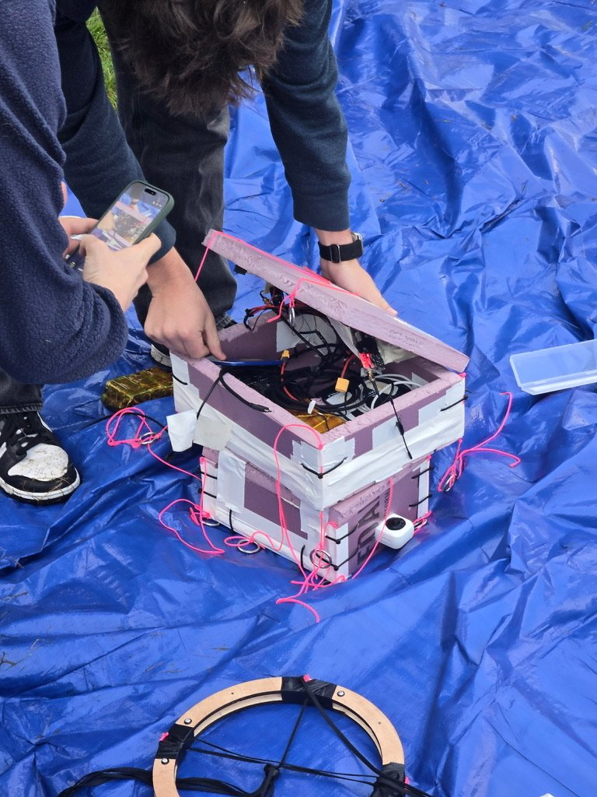
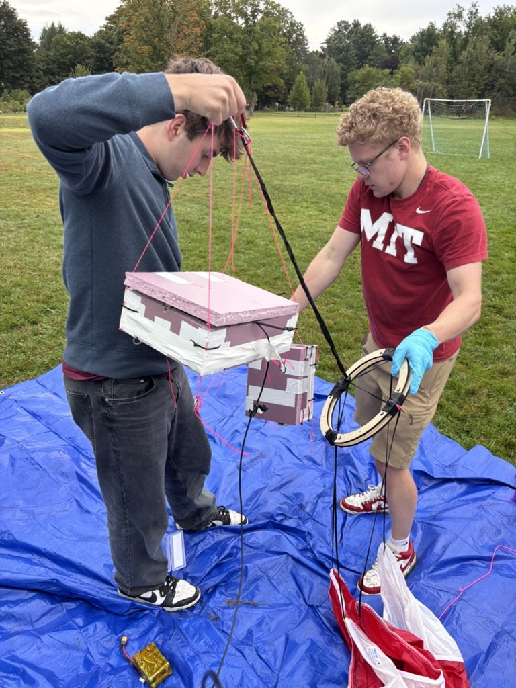
Ground segment. The long-range antennas we ordered got delayed past launch, so a teammate built two Yagi-Uda antennas from PVC and cut-up tape measures at the MIT Radio Society makerspace. They fed a ground station packed into a hard case. We also built a mission control dashboard that reported the flight back in real time: a live map with the predicted path (from a Tawhiri forecast for a 2 kg payload, 5 m/s ascent, and 24 km burst), a telemetry panel with surface pressure, humidity, wind, estimated altitude and vertical rate, plus the Jetson's CPU load and storage, and an "Agent insights" panel where an LLM interprets the flight against public weather data.
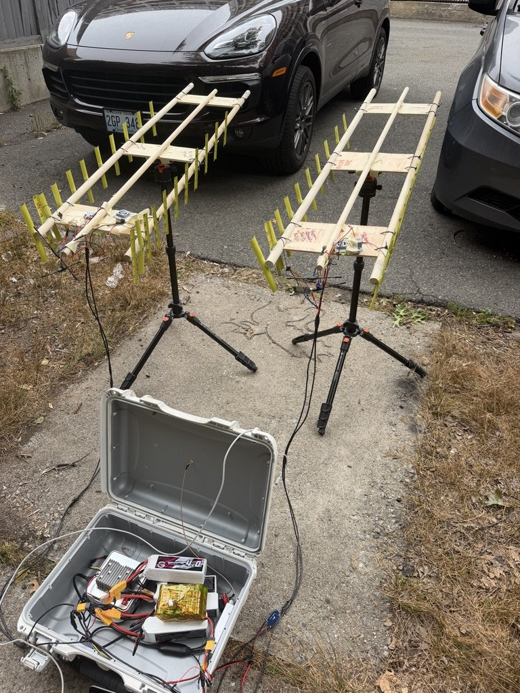
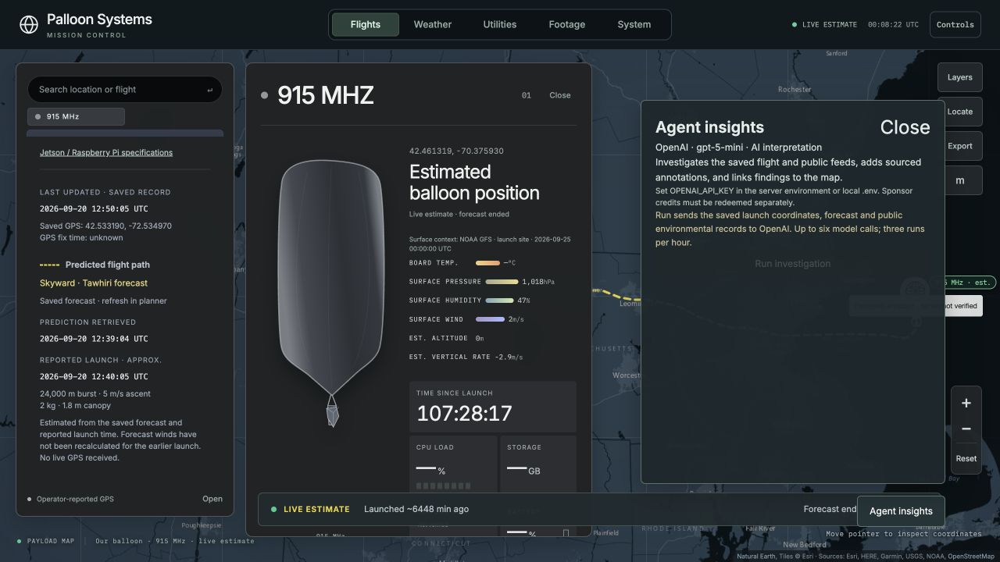
Results
We drove about three hours out and launched from Montague, MA, on the morning of September 20, 2026. Strong eastward winds carried it across the state toward the coast, which is the drift risk the free-lift analysis was meant to limit, and it came down in Everett, just outside Boston.
The agent ran at altitude: prompts went up, the payload ran them on board, and the LLM's responses came back down over radio along with GPS and telemetry. We also built a mapping tool to reconstruct the full flight path against NOAA GFS winds:
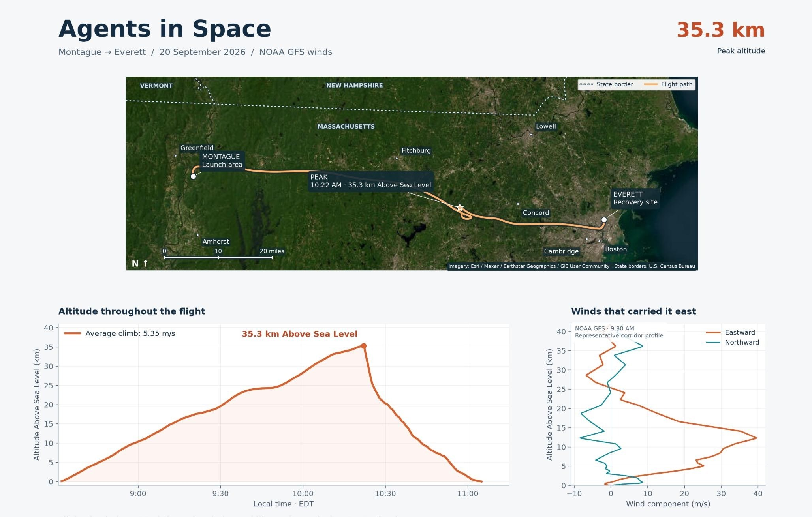
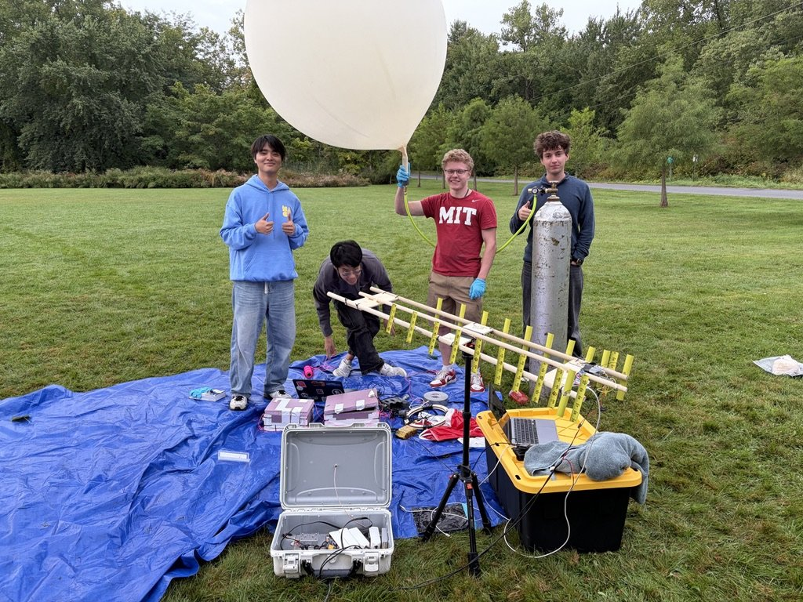
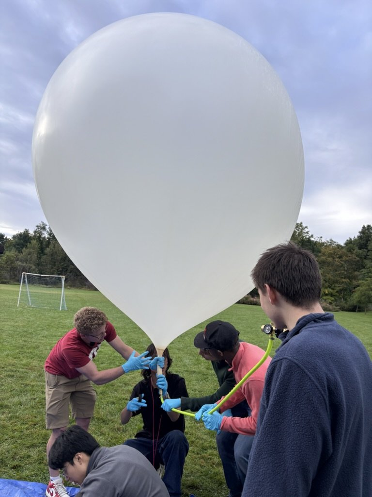
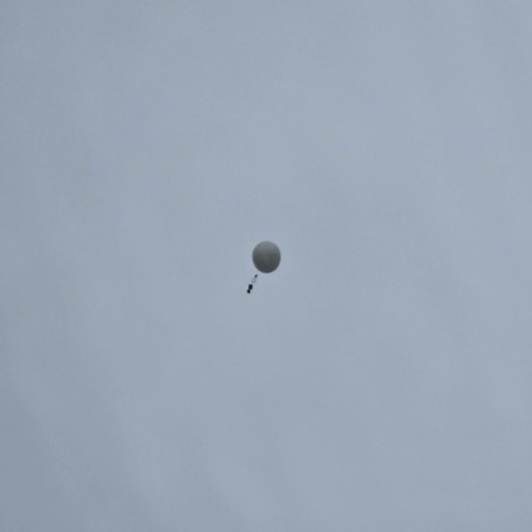
We tracked it down and recovered the payload within a 10-minute drive of MIT, with the parachute, ring, and both boxes intact.
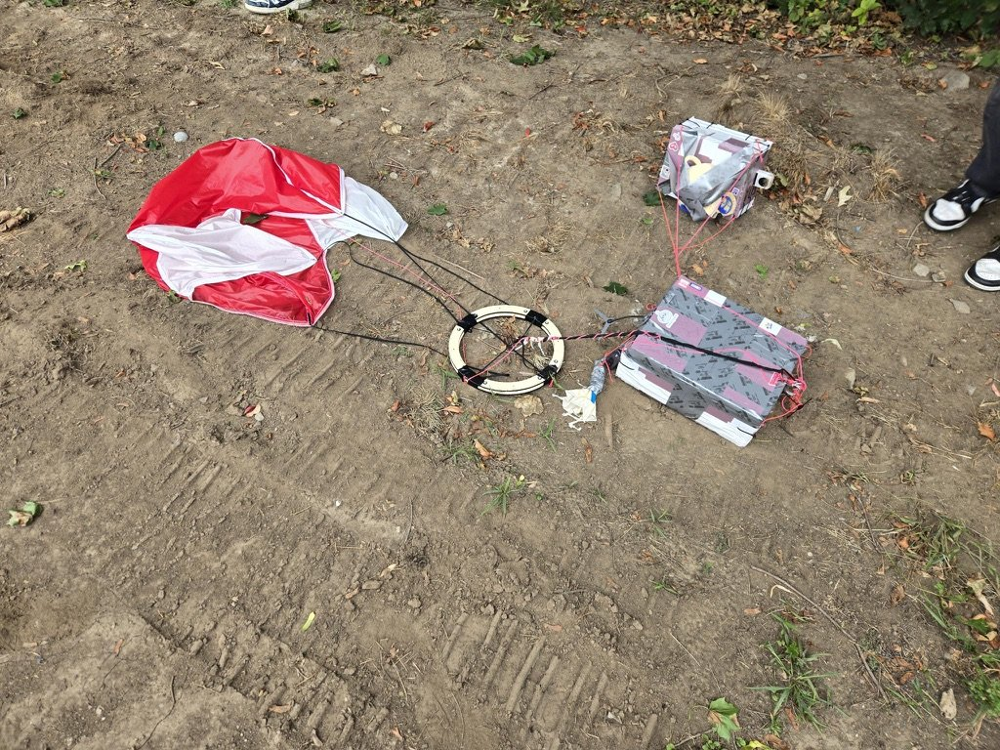
Next. We still have the second balloon from the original two-balloon plan. We plan to engineer it properly and launch it again.